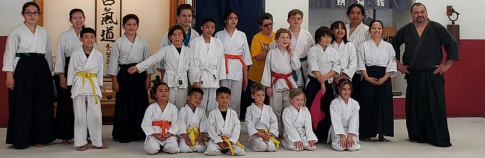

Children

Children Program
Children as young as five years of age benefit from practicing Aikido. Children are avid learners of new material. They enjoy challenging their young minds and bodies and take special pride in mastering new skills. In addition, they require regular exercise to stay fit both physically and mentally. Keeping this in mind, we strive to attain the following goals with children:
- Develop physical and mental awareness
- Improve flexibility and coordination
- Enrich interpersonal skills
- Enhance self-esteem and self-confidence
- Provide overall body conditioning